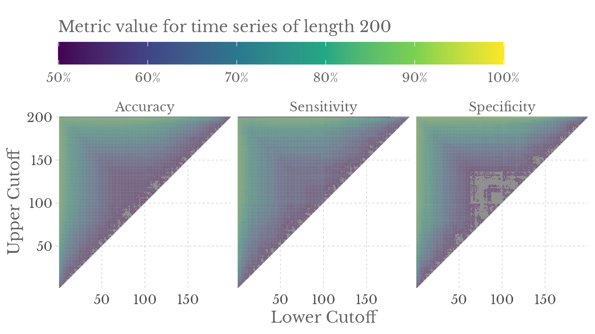

Simulation study
Scope
This document is intented to run the described simulation study for fractional Gaussian noise time series of length 200.
Import helper functions
setwd(here::here('01_finite_variance_simulations'))
source('../helpers/00_libraries.R')
source('../helpers/01_simulation_helpers.R')
source('../helpers/02_regression_helpers.R')
source('../helpers/03_evaluation_helpers.R')Define necessary parameters
Hs <- seq(0.3, 0.7, length.out = 12) # Hurst parameter
my_mset <- metric_set(accuracy, sens, spec)
n_seeds <- params$n_seeds # simulations per Hurst parameter and TMax
n_seeds[1] 100TMax <- params$TMax # ts length
TMax[1] 200Simulate fGN time series
# Enable parallel-processing
plan(multisession, workers = 7)
fGNs <- simulate_many_fGN(TMax, Hs, n_seeds)
print(fGNs, n = 2)# A tibble: 1,200 × 3
simu_id H ts_original
<int> <dbl> <list>
1 1 0.3 <dbl [200]>
2 2 0.3 <dbl [200]>
# … with 1,198 more rowsCompute the periodograms and variances
vars_and_periodograms <- fGNs %>%
mutate(
variance = future_map(ts_original, estimate_variances),
periodogram = future_map(ts_original, estimate_periodogram)
)
print(vars_and_periodograms, n = 2)# A tibble: 1,200 × 5
simu_id H ts_original variance periodogram
<int> <dbl> <list> <list> <list>
1 1 0.3 <dbl [200]> <dbl [100]> <dbl [200]>
2 2 0.3 <dbl [200]> <dbl [100]> <dbl [200]>
# … with 1,198 more rowsNotice that the variance vectors are shorter because by default the variance is only estimated until TMax / 2. This is done to save time because the regression is done on a smaller window anyway.
Compute grid estimates
Now, we will compute grid estimates.
Variance estimator
Let us begin with the variance estimator.
# We restrict our grid from above by TMax/3 because the variance estimator
# never performs well above this anyway.
grid <- compute_grid(TMax = TMax / 3)
variances <- vars_and_periodograms %>%
select(-periodogram)
grid_estimates <- variances %>%
mutate(
grid_estimates = future_map(variance, ~estimate_var_slope_grid(., grid = grid))
)GPH estimator
Of course, we do the same thing for the GPH estimator. Note that this estimator can use the full grid.
grid_GPH <- compute_grid(TMax = TMax)
periodograms <- vars_and_periodograms %>%
select(-variance)
grid_estimates_GPH <- periodograms %>%
mutate(
grid_estimates = future_map(periodogram, ~estimate_GPH_slope_grid(., grid = grid_GPH))
)Compute metrics for each cutoff
metrics_var <- evaluate_metrics(grid_estimates, my_mset)
metrics_GPH <- evaluate_metrics(grid_estimates_GPH, my_mset)These can be visualized as follows.
Variance estimator

GPH estimator

We are mainly interested in comparability of the two estimators under best conditions. So, let us compute the best overall cutoff values w.r.t. to Accuracy.
Top 5 - Variance estimator
| lBd | uBd | Accuracy | Sensitivity | Specificity |
|---|---|---|---|---|
| 1 | 4 | 90.50% | 87.67% | 93.33% |
| 1 | 5 | 90.50% | 87.33% | 93.67% |
| 1 | 2 | 90.33% | 88.67% | 92.00% |
| 1 | 3 | 90.33% | 87.83% | 92.83% |
| 1 | 6 | 89.75% | 86.67% | 92.83% |
Top 5 - GPH estimator
| lBd | uBd | Accuracy | Sensitivity | Specificity |
|---|---|---|---|---|
| 1 | 104 | 89.25% | 89.33% | 89.17% |
| 96 | 199 | 89.25% | 89.33% | 89.17% |
| 1 | 103 | 89.00% | 89.00% | 89.00% |
| 97 | 199 | 89.00% | 89.00% | 89.00% |
| 1 | 110 | 88.92% | 88.67% | 89.17% |
Time for simulations
# A tibble: 8 × 4
chunk sec min hours
<chr> <dbl> <dbl> <dbl>
1 packages 1.21 0.02 0
2 parameters 0.05 0 0
3 simulate_fGNs 3.11 0.05 0
4 estimate_vars_and_periodograms 40.7 0.68 0.01
5 grid_estimates_variance 36.8 0.61 0.01
6 grid_estimates_GPH 324. 5.4 0.09
7 compute_metrics 24.0 0.4 0.01
8 total 432. 7.19 0.12